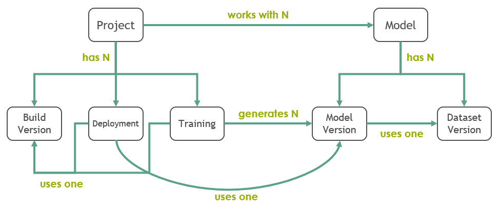

Noronha’s Data Model¶
This section describes how Noronha stores its metadata in MongoDB and how these metadata documents relate to each other. Reading and understanding this section is going to help you when creating and manipulating projects, models and other objects in Noronha.
The diagram bellow gives a hint on the document relationships described in detail here:
This guide adopts the following conventions for representing document fields that link to other documents:
Referenced document: fields in bold are like pointers. Their content is always consistent with the original document they refer to. Fields like these are meant to answer questions like: which model is my project using? Which model files are expected?
Embedded document: fields in italic are like snapshots. Their content is a report of how the referred document was when the field was updated. Fields like these are meant to answer questions like: which version of my project’s code was used in that training?
Project¶
Represents a project that is managed by the framework. Also referred to as proj.
{
name: name-of-the-project # only alphanumerical and dashes
desc: free text description
model: list of models used by this project
home_dir: local directory where the project is hosted
git_repo: the project's remote Git repository
docker_repo: the project's remote Docker repository
# see project repositories
}
Build Version¶
Represents the Docker image that was created when the project was built by Noronha. Also referred to as bvers or bv (not to mistake for beavers :D).
{
tag: Docker tag
proj: the project which was built
docker_id: the Docker hash associated to the image that was created
git_version: the Git hash associated to the last commit before the project was built
built_at: date and time when it was built
built_from: either 'local', 'git' or 'pre-built' (determined by the build command)
}
Model¶
Represents a model that is managed by the framework.
{
name: name-of-the-model # only alphanumerical and dashes
desc: free text description
model_files: list of file docs. These files compose the model's persistence
data_files: list of file docs. These files compose a dataset for training the model
}
# btw, this is how a file doc is defined:
{
name: file.extension
desc: free text description
required: if true, this file can never be left out
max_mb: maximum file size in MB. Not necessary, but good to know
}
Note that this is not a model version, but a model definition: it’s like a template that describes how a model is going to be persisted. Of course, when starting project we usually have no clue of how the model is going to be, but don’t worry: all properties except the model’s name can be edited later.
Dataset¶
Represents a dataset that is managed by the framework. Also referred to as ds (not a data scientist though :D).
{
name: name-of-the-dataset # only alphanumerical and dashes
model: the model to which this dataset belongs
stored: if true, the dataset files are stored in Noronha's file manager
details: dictionary with arbitrary details about the dataset
}
Training¶
Represents the execution of a training. Also referred to as train (not the one that runs on rails :D).
{
name: name-of-the-training # only alphanumerical and dashes
proj: the project responsible for this training
bvers: the build version that was used for running this training
notebook: relative path inside the project's repository to the training notebook that was executed
task: task doc. Represents the training's progress and state
details: dictionary with arbitrary details about the training
}
# btw, this is how a task doc is defined:
{
state: either one of WAITING, RUNNING, FINISHED, FAILED, CANCELLED
progress: number between 0 and 1
start_time: when the task started
update_time: when the task's state and/or progress was updated
}
Model Version¶
Represents a persistent model that was generated during a training. Also referred to as movers or mv.
{
name: name-of-the-version # only alphanumerical and dashes
model: the parent model definition (template) that shapes this version
train: the training execution that generated this version
ds: the dataset that was used for training the model
details: dictionary with arbitrary details about the version
}
Deployment¶
Represents a group of one or more identical containers providing a prediction service. Also referred to as depl.
{
name: name-of-the-deployment # only alphanumerical and dashes
proj: the project to which this deployment belongs
movers: the model version used in this deployment
bvers: the build version (docker image) used for creating this deployment's containers
notebook: relative path inside the project's repository to the prediction notebook that is executed
details: dictionary with arbitrary details about the deployment
}
Treasure Chest¶
Represents a pair of credentials recorded and stored securely in the framework. Also referred to as tchest.
{
name: name-of-the-tchest # only alphanumerical and dashes
owner: os-user-to-whom-it-belongs
desc: free text description
details: dictionary with arbitrary details about the tchest
}